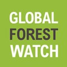

Global Forest Watch (GFW) is a platform that provides real-time forest monitoring using satellite data. It helps track deforestation, manage protected areas, and support sustainable land use. Currently, GFW does not accept direct donations, but it operates the Small Grants Fund program, which supports civil society organizations in using GFW data to monitor illegal logging and enhance forest conservation efforts.
visit